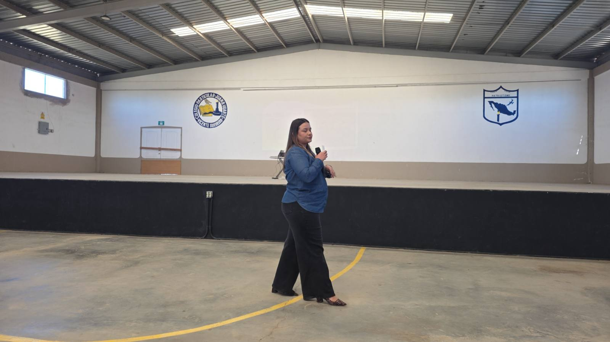
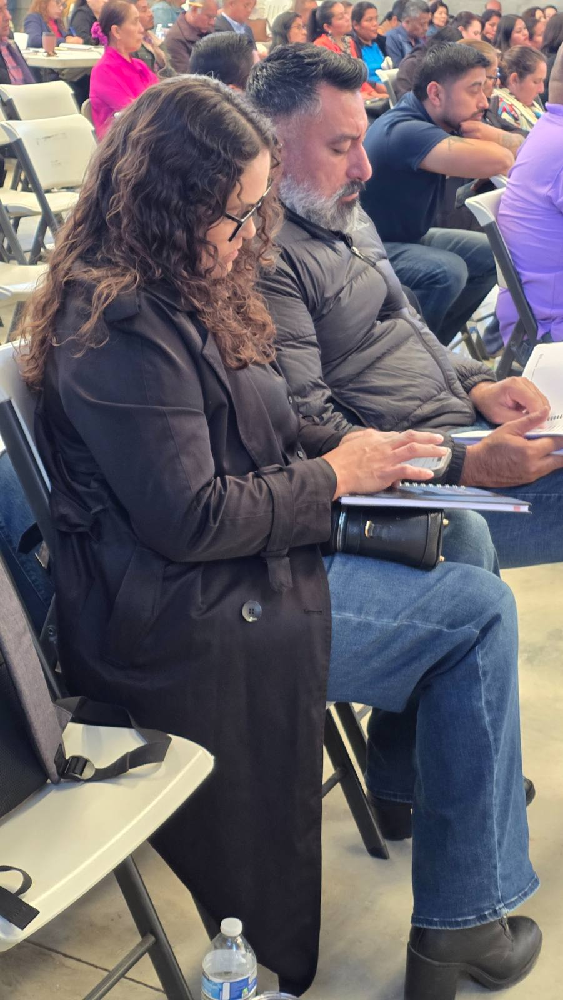
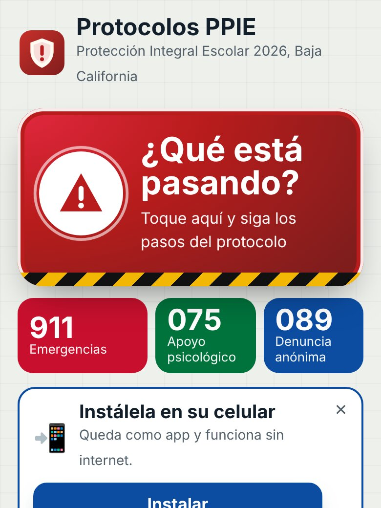
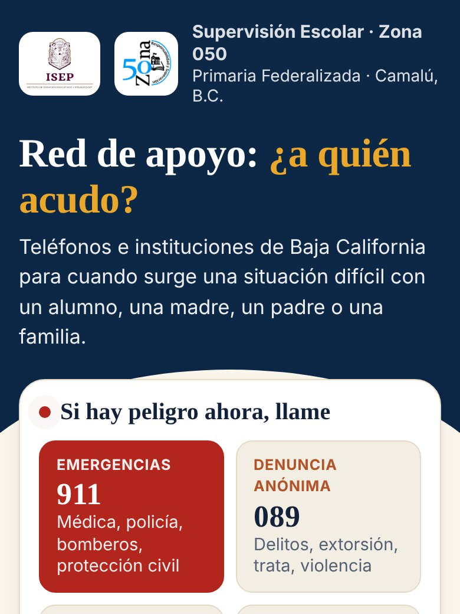

Zona Escolar 050
Zona Escolar 050La mañana del jueves 26 de noviembre, de 9:00 a 12:00 horas, directoras, directores y encargados de despacho de las escuelas de la región San Quintín se reunieron en las instalaciones del Colegio Particular Juan B. Ugarte, en Vicente Guerrero, para recibir capacitación sobre el Programa de Protección Integral Escolar (PPIE).
La capacitación estuvo a cargo del área de Participación Social y Convivencia Escolar. Por parte de la Zona Escolar 050 asistieron todos los directivos de nuestras escuelas, acompañados por la Supervisión Escolar.


Por qué es importante
Los directores son quienes encabezan la activación de los protocolos cuando algo ocurre en la escuela. Conocerlos bien permite actuar a tiempo, con orden y con apego a la normativa, y coordinarse con las familias y con las instituciones que correspondan.
Lo trabajado en esta capacitación continúa lo acordado en la tercera sesión del Consejo Técnico de Zona, donde la capacitación en el PPIE para directores se incluyó en el orden del día.
Los protocolos, a la mano
Para apoyar a las escuelas, la Supervisión pone a disposición de todo el personal dos herramientas en esta página, abiertas sin necesidad de clave y que se pueden instalar en el celular:

Protocolos PPIE · ¿Qué está pasando? Guía paso a paso ante un accidente, violencia, consumo de sustancias, amenazas o una emergencia: qué hacer, a quién llamar y qué formato llenar. Abrir los protocolos →
Red de apoyo: ¿a quién acudo? Instituciones y teléfonos de Baja California para atender situaciones con alumnos y familias, con búsqueda por tema y por municipio. Abrir la Red de apoyo →La Supervisión Escolar Zona 050 agradece a los directivos su asistencia y su compromiso con la seguridad y el bienestar de nuestras alumnas y alumnos.